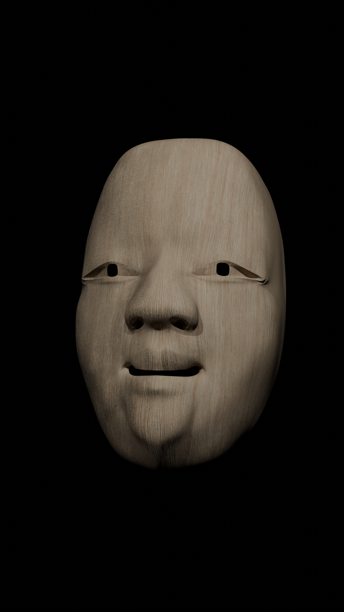
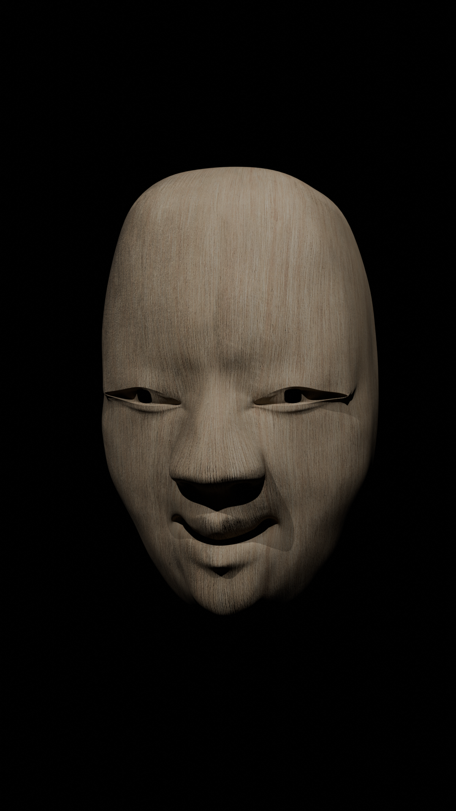

CGVISUALS

Blender
前作の延長として、日本的な表現や二面性をテーマに制作した3DCG作品。PV素材として使うことを想定したモデリング。

鏡板に描かれた老松。松は古来より依り代として大事にされ、神の降り立つ場所として信仰がある。
舞台を神域と見立て演者が舞台に立つことにより、神と一体となるという精神的な意味合いを持ち、演者の存在を曖昧にさせる。


照ラス、曇ラス。主に若い女性の面として用いられる小面のモデリング。
能面は見る角度により様々な表情を生む。そのうちの喜びなどの気持ちを表す照ラスと、悲しみなどの気持ちを表す曇ラスの表情を切り取った。

GSX750S3のリトラクタブルヘッドライトの二面性を能面になぞらえたシーン
NEXT